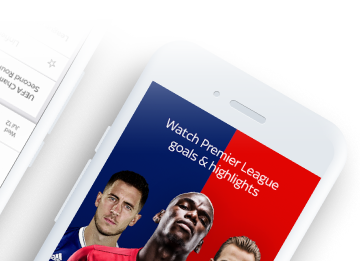

An Enhanced Football Experience
The Guardian Live Scores app is your go to app for live scores and watching Premier League goals… Get in there, what a result!
As well as videos of all the goals, you can watch match highlights, check out the latest scores and results and stay bang-up-to-date with the big football stories from The Guardian publication.


An Enhanced Football Experience
The Guardian Live Scores app is your go to app for live scores and watching Premier League goals… Get in there, what a result!
As well as videos of all the goals, you can watch match highlights, check out the latest scores and results and stay bang-up-to-date with the big football stories from The Guardian publication.
So, if you’re not a subscriber, now’s the time to make that savvy call. If that’s a step too far for you, you can still watch loads of firecracker Premier League action as long as you sign in with a free Guardian iD.
User-friendly Interface
The in-game goal clips from every Premier League match are available to Guardian TV customers with a Guardian subscription.
So, if you’re not a subscriber, now’s the time to make that savvy call. If that’s a step too far for you, you can still watch loads of firecracker Premier League action as long as you sign in with a free Guardian iD.
Features That Will Tailor Your Experience
Video highlights for every Premier League and English Football League game
Notifications for your teams, including in-game goal clips and Premier League match highlights for Sky TV subscribers with Guardian
Brand new video section including dedicated areas for your chosen team, trending video, Premier League, Football league and other major leagues
Match pages showing live scores, commentary, team line-ups and enhanced match stats to keep you up-to-date on all the action
The new picture in picture video mode means you can watch goals, manager interviews and more whilst using other areas of the app – so you don’t need to miss any of the action
Live updated league tables including all the domestic, European and major leagues and tournaments
The Guardian News Vidiprinter. Follow the goals as they go in with our new and improved Vidiprinter
Match reports, previews and a dedicated news section
Video highlights for every Premier League and English Football League game
Features That Will Tailor Your Experience
and English Football League game
in-game goal clips and Premier League
match highlights for Sky TV subscribers with
Guardian
dedicated areas for your chosen team,
trending video, Premier League, Football
league and other major leagues
commentary, team line-ups and enhanced
match stats to keep you up-to-date on all
the action
means you can watch goals, manager
interviews and more whilst using other
areas of the app – so you don’t need to miss
any of the action
the domestic, European and major leagues
and tournaments
goals as they go in with our new and
improved Vidiprinter
news section
personalising your home page with
up-to-the-minute information on your team
What Our Users Say


We have been featured in
We have been featured in
Get Up Close With Your Team
If you’re interested in the scores of more than one team (it’s OK, we won’t tell your mates you support two clubs!), you can choose the scores and competitions that matter to you using the ‘My Scores’ section. So, make sure you’re a top-flight football fan by downloading the Football Score Centre now. It’s got all this:
Get Up Close With Your Team
If you’re interested in the scores of more than one team (it’s OK, we won’t
tell your mates you support two clubs!), you can choose the scores and
competitions that matter to you using the ‘My Scores’ section. So, make sure
you’re a top-flight football fan by downloading the Football Score Centre
now. It’s got all this: